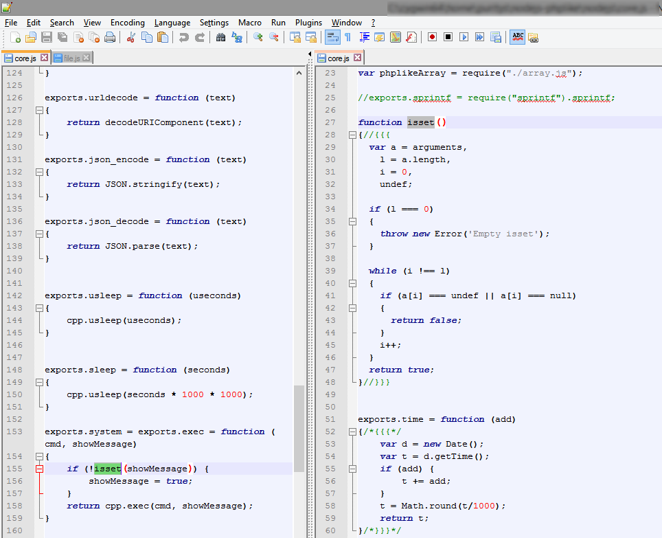

編輯器 - 又稱 IDE ，這東西一直都是百家爭鳴的狀態，每一種編輯器都有眾多的支持者，而作者我本身目前最愛用的程式編輯器是「Vim」，沒錯! 就是這個傳說中石器時代的工具，但我可不是一開始就喜歡上 Vim 的呢，當我還在朦朧不懂大學生時代，第一次學習在 Linux 上安裝網頁伺服器，PHP、 MySql Server 等等各種軟體，偶爾也要改一些系統設定檔，不管是 Apache conf, my.cnf, php.ini, 甚至是 /etc/passwd，總是需要有一個編輯器來用， 而 Linux 系統上就有個內建的編輯器，那就是 Vi 與 Vim (Vim 是 Vi 的加強版) 這兩個，於是我踏進了 Vim 的第一步，我第一次在 Terminal 輸入了 vim /var/www/httpd.conf，想當然爾，我想要修改 Apache 設定檔，一定會使用方向鍵來移動游標，先移動到想修改的地方，所以我按下方向鍵「←」，但這時 Vim 卻幫我輸入了個英文字母大寫「D」，然後再順便幫我斷了個行，我不解的再多按了幾下「↑」、「↓」，「←」，「→」，螢幕上竟然出現了一堆「ABCD」，就在這個 Moment，心中出現了一堆「???」，到底是發生什麼事了呢，為什麼我輸入「←」，會出現大寫 D ，當時我只是猜著說 Vim 好像不認識鍵盤方向鍵，而心裡想著「這編輯器根本是原始人設計的吧」 Orz ! 過不了多久我就改用 Nano ，這套也支援 Linux 的編輯器，而且長達 6 年的時間，不再使用 Vim 這種鬼東西。
逃離 Vim
當年我不喜歡在 Terminal 上編輯程式或是修改設定檔，所以我會在每一台 Linux 系統裝上 Samba 這個網芳軟體，再把根目錄「/」全部共享出來，透過 Windows 的網芳功能，使用 Notepad++ 來編輯 Linux 上所有的檔案，這個方式，讓我完全脫離了 Linux 上的編輯器，不用再面對難用的 Vi / Vim，而這個方式只有一個小小的缺點，就是當我們儲存檔案的時候，會有 1 至 2 秒的檔案同步延遲時間，不過總比在 Vim 上為了方向鍵，一直不斷的切換「Insert」，「View」模式好多了；持續六年，我最喜歡的編輯器是 「Notepad++」，我喜歡他小巧，乾淨，簡單使用。
2011 年，再次碰上 Vim
2011 年末，我換了個新的工作，在新的辦公室，看到旁邊資深同事們正在使用 Vim 來開發程式，雖然心中有不好的預感，但是我這個菜鳥也只能入境隨俗的重新打開了 Vim ，看著新人手冊上的 Linux, Vim 設定，一步一步的建構起開發環境，這時我才發現，原來 Vim 可以很彈性的設定各種熱鍵，外掛，配色，原來有了正確的設定檔，方向鍵「↑」、「↓」，「←」，「→」 它們又重新活了過來!! 原來 Vim 也可以那麼的強大 ~~~
回顧
我喜歡簡單的介面來寫程式，我人生中的第一個編輯器，就是 Windows Notepad，當時我用來寫 HTML，CSS，Javascript 等網頁相關程式，那個年代 Debug 真的會想哭 ... ，後來接觸了 UltraEdit, EmEditor，以及 Notepad++， 很快的，我就愛上了 Notepad++ 當我最主要的編輯器，並且一用就是六年。
我不只是用 Notepad++ 來寫網頁程式，我還拿它來寫 C/C++ 與 Java 程式，我也曾寫過一篇文章來介紹如何在 Notepad++ 上編譯 C/C++ 。
Notepad++ 特色
- 分割視窗
- 分頁切換
寫這麼多年的程式，我發現我要的編輯器，一定要有分割視窗與分頁切換，這兩個功能對我來說非常重要，分頁切換可以讓我一次打開多個檔案同時編輯，例如我會打開 CSS, JS 與 HTML ，這三個檔案很容易會同時被修改，而分割視窗則是讓我可以將同一個檔案分成兩個視窗，一邊看被呼叫的 Function，一邊看呼叫別人的 Script。
為何 Vim 成為我的最愛
Vim 內建於每一台 Linux 系統，只要透過 SSH Client ，就能連到 Linux 然後使用 vim 開始程式開發，也就是說我能夠任何有網路的地方，直接遠端連線到自已家的伺服器寫程式，而且不用事先安裝任何編輯器，唯一要做的就是下載 SSH Client (如 putty)，隨著時代的進步，瀏覽器 Chrome 現在也開發了一套 SSH Client Extension ，只要在 Chrome 上安裝這個 Extension ，就能取代 Putty 的所有功能。
我在家裡架了一台 Linux 伺服器，並且把所有會用到的工具全部裝上這台機器，這樣不管我到那裡，只要我手上有電腦，就能隨時遠端連回我的伺服器，立刻開始作事，不管是 PHP, Node.js C/C++, Apache, Mysql, DNS Server, Wordpress, Proxy 等等，應有盡有，讓我不用再煩惱去安裝每台電腦的軟體，我只要確定伺服器上安裝了正確的軟體即可。
如果你想用其它先進的編輯器 (如 Eclipse, Visual Studio) 來遠端開發程式，那麼你必需在每一台電腦先裝好編輯器，然後再裝上 SFTP 程式，將程式下載回本地端 (Eclipse 內建有類似 SFTP Sync 功能)，再來就要面對電腦效能問題，現今我們常常會帶著筆電到處跑，而筆電的效能又比桌機稍差了一點，若是你的電腦配備又不佳 ，在這些編輯器上寫程式時，切換檔案時會頓頓的，或是搜尋字串時卡卡的，用這種環境開發，心情會非常的糟糕，寫出來的程式也不會太好。
神器 - Linux 搭配 Vim
Linux - screen + vim + vsplit + Terminal tab
在 Linux 系統用 Vim 開發程式，到底有多好用呢 ? 首先我一定會使用 screen 這個 multiple console 的工具 (也有人用 tmux )，screen 可以讓我在同一個 Terminal 同時開啟好多個 console，每個 console 都是一個獨立的 process ，假如我建立了三個 console ，那麼我就會第一個 console 用來編輯程式，第二個 console 用來執行 unit test，最後第三個 console 用來操作 Linux 指令，如 grep 檔案， top 檢查系統狀況；在來當我們一天的開發到一個段落後(下班)，登出 Linux 時，並不會中斷 screen 的程序，當下打開的所有檔案，或是執行中的程序，仍然正常的運作著，等下一次我們再次登入 Linux ，立刻又回到昨天的畫面，馬上又能夠接上進度。
Vim , 現今我喜歡簡單的編輯器，有些強大的編輯器，會幫你修正各種拼字錯誤，或是自動載入 Header File ，自動文字補完，這些功能都會造成工程師無法了解程式的全貌，想想一個對程式，系統底層非常了解的工程師，與一位不了解底層，靠強大編輯器來寫程式的工程師，那一位 Debug 會比較快呢 ? , 我寫程式的時候，會試著去了解每一行 Code 代表意義，每一個 Method ，每一個 Function，每一個 Header ，分別做了什麼事，唯一清楚的知道每一行程式 ，才能有自信的說，我寫的程式沒問題了! 如果編輯器太過強大，整天幫我修正設定檔，那麼我就很難更深入的了解它。
以下列出 Linux VIM 上開發的優點
- 支援各種類型程式，如 Python, PHP, Perl, Javascript, Node.js, Java, C/C++
- 遠端編輯 - 可以在任何有網路的地方，遠端連線到伺服器上使用 Vim 開發
- 完美配合 Linux 指令
- Grep, Find 快速搜尋檔案
- 可搭配 Linux 軟體使用，如 Screen
- 執行 unit test
- 執行各種 Script
- Screen 保留編輯中狀態，以及目前開啟的檔案。
- 速度快，沒有多餘的功能，單純就文字編輯，不會有時間延遲。
- 完全自定義熱鍵，沒有 IDE 的限制，99 % 熱鍵都可以自已設定。
當然 VIM 也不是沒有缺點，像是我打字很慢，又常常會打錯字 (沒有拼字檢查)，Function 名稱也常打錯，或是我常忘記 function 的第一個參數要帶什麼型態的數值，Array 格式打錯，多了逗號，少了逗號等等問題，以上問題當然也可以安裝 vim plugin 來解決，不過我選擇了「人工處理」，為什麼呢 ? 因為我覺得程式開發最重要的項目是確保邏輯的正確性，效能，安全性，可讀性，而不是在追求打字可以有多快，我大部分的時間是花在思考，而不是打字。
- 逗號多打、少打，符號打錯的問題：這是習慣問題，只要習慣用正確且一致的語法寫程式，這個問題就不太會發生。
- 打錯字、拼字檢查：若你打錯字，造成變數名稱不一致時，只要透過 Unit test 就能發現這些問題，而 Unit test 本來就是必寫的!。
- Array, Json 格式打錯：程式會直接當掉，開發時很容易發現的問題，不太會 Release 到 Production 。
- Function 的參數格式：有些編輯器可以提示你 function 要帶哪些參數，這個功能的確是非常的好用，Vim 也有類似的外掛，不過這個功能會讓編輯器的速度變慢，我不能忍受打字時有 Lag 的情形發生，而我也很感謝 Google ，當我不確定 Function 的參數時，只要在詢問 Google 大神 ，通常不到 30 秒就找到解答了，所以我也不需要使用 Function 提示的功能。
上面這些問題可以透過安裝 Vim plugin 來解決，例如 syntax checker plugin: "vim-syntastic/syntastic"， Java 程式則可以安裝 "eclim"。
最後來個簡單的 Vim 搭配 Linux 操作 Demo
其它編輯器參考
- Eclipse
- webstorm
- netbeans
- IntelliJ IDEA
- Notepad++
- UltraEdit
- EmEditor
- gedit
- sublime
- Vim
- gVim
- Nano
- emacs
其它相關資料
why-you-should-use-an-ide-instead-of-vim-or-emacs
从 Vim 与 IDE 的讨论说起
Vim 中文教學
Vim Docker Image
- https://hub.docker.com/r/puritys/vim
- docker pull puritys/vim:stable